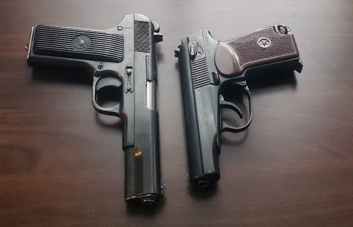

ХАРОМЗОДАЛАР КУНИ
Муаллиф: Зоҳиджон Зокиров | 1-Қисм

"Ҳаромзодалар куни: Етти қондош қасоси"
1-БОБ: ЁМҒИР ВА ҚОН ҲИДИ
Лондоннинг тунги осмони қурғошиндек оғир ва кулранг эди. Тинимсиз ёғаётган майда ёмғир шаҳарнинг эски кўчаларидаги чироқлар нурини хиралаштириб, асфальт устида қонга ўхшаш қора ялтироқ излар қолдирарди.
Детектив Эмма Дотсон Темза дарёси бўйидаги ташландиқ кемасозлик омбори қаршисида тўхтади. У пальтосининг ёқасини кўтариб, атрофга синчков қаради. Совуқ шамол унинг юзига уриларкан, ичкаридан келаётган нохуш ҳидни сезди.

Унинг ортидан келаётган ёрдамчиси Денис Хенгкс қўлидаги планшетнинг чироғини ёқиб, лойқа ерда қолиб кетган оғир этик изларини кўрсатди.
— Эмма, бу ерда нимадир нотўғри, — деди Денис паст овозда. Унинг овозида Британияга хос совуққонлик бўлса-да, ҳаяжон сезилиб турарди. — Бу оддий қотиллик эмас. Ичкаридаги манзара... у жуда ваҳший.